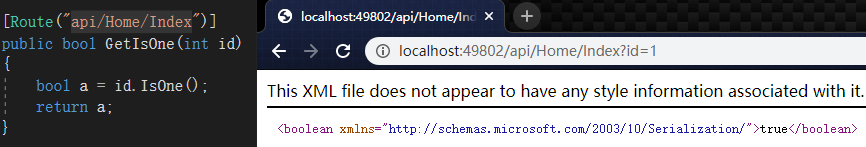

# C# 扩展方法
# 定义
# 1. 声明扩展方法的类必须为 static 类；
# 2. 扩展方法本身也必须声明为 static；
# 3. 扩展方法必须包含关键字 this 作为第一个参数类型，并在后面跟着它所扩展的类型的名称。
# 开始操作
# 先创建一个静态类叫 StringExtension
# 然后简单写一个静态方法，我这里写的是布尔，用来判断入参是否等于 1
# 控制器导入扩展方法所在的类的命名空间，限制扩展方法的使用
public static class StringExtension | |
{ | |
/// <summary> | |
/// Remark：判断输入的是不是 1 | |
/// </summary> | |
/// <param name="input"></param> | |
/// <returns></returns> | |
public static bool IsOne(this int input) | |
{ | |
if (input == 1) | |
{ | |
return true; | |
} | |
return false; | |
} | |
} |
# 接口调用方法，传参为 1，返回 true
